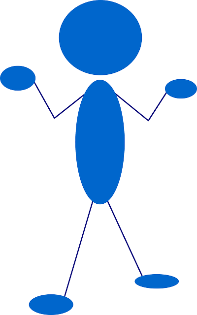

We believe security software like Kicksecure needs to remain Open Source and independent. Would you help sustain and grow the project? Learn more about our 14 year success story and maybe DONATE!
privleap / leaprun
- Default Passwords
- Passwords
- Account Management
- Login
- Login Spoofing
- Safely Use Root Commands
sysmaintAccount- System Maintenance Panel
- Unrestricted Admin Mode
- Protection against Physical Attacks
- User Account Isolation (developers)
user-sysmaint-split (developers)- Polkit (formerly PolicyKit) /
pkexec - privleap /
leaprun
privleap / leaprun
Introduction
 Documentation for this is incomplete. Contributions are happily
considered! See this for
potential alternatives.
Documentation for this is incomplete. Contributions are happily
considered! See this for
potential alternatives.
https://github.com/Kicksecure/privleap
privleap custom actions
Notes:
- Works with command line interface (CLI) applications only!
1
Boot into
PERSISTENT Mode | SYSMAINT Session | system maintenance tasks.
Setting this up requires booting into sysmaint session.
2
Create file /etc/privleap/conf.d/user-custom.conf.
sudo append-once /etc/privleap/conf.d/user-custom.conf "\ [action:user-custom] Command=/usr/bin/user-custom AuthorizedGroups=sudo AuthorizedUsers=user "
3 Check the privleap configuration file is valid.
privleapd --check-config
If there is no output, no error message, then the configuration is valid.
4
Create executable file /usr/bin/user-custom.
Open file /usr/bin/user-custom in an editor with
administrative ("root")
rights.
1 Select your platform.
2 Notes.
- Sudoedit guidance: See Open File
with Root Rights for details on why using
sudoeditimproves security and how to use it. - Editor requirement: Close Featherpad (or the chosen text
editor) before running the
sudoeditcommand.
3 Open the file with root rights.
sudoedit /usr/bin/user-custom
2 Notes.
- Sudoedit guidance: See Open File
with Root Rights for details on why using
sudoeditimproves security and how to use it. - Editor requirement: Close Featherpad (or the chosen text
editor) before running the
sudoeditcommand. - Template requirement: When using Kicksecure-Qubes, this must be done inside the Template.
3 Open the file with root rights.
sudoedit /usr/bin/user-custom
4 Notes.
- Shut down Template: After applying this change, shut down the Template.
- Restart App Qubes: All App Qubes based on the Template need to be restarted if they were already running.
- Qubes persistence: See also Qubes Persistence
- General procedure: This is a general procedure required for Qubes and is unspecific to Kicksecure-Qubes.

2 Notes.
- Example only: This is just an example. Other tools could achieve the same goal.
- Troubleshooting and alternatives: If this example does not work for you, or if you are not using Kicksecure, please refer to Open File with Root Rights.
3 Open the file with root rights.
sudoedit /usr/bin/user-custom
5 Paste.
Notes:
- Replace
custom-command-herewith your actual custom command or commands. - Advanced users feel free to use other script or programming languages instead.
- Optional: See folder
/etc/privleap/conf.dfor other examples.
#!/bin/bash
custom-command-here
6 Make executable.
sudo chmod +x /usr/bin/user-custom
7
Boot into
PERSISTENT Mode | USER Session | daily activities.
8 Run the privleap custom action.
leaprun user-custom
9 Done.
The process is complete.
privleap versus polkit
If there was a polkit implementation in Python that could make Privleap obsolete? No, probably not.
Polkit exists only to give "yes", "no", or "ask for authentication first" answers to "can user X do Y?" questions. It is unable to actually take the requested actions itself; it assumes the caller does that.
Privleap, on the other hand, is designed to actually perform actions on behalf of the calling user.
So no, they serve two related but distinct purposes.